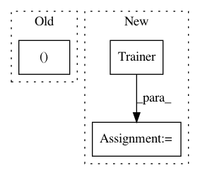

ed2a92cf0f4ab75f49f83432bc56b06b6c7112df,seq2seq/tf/seq2seq.py,,,#,262
Before Change
sess = tf.Session()
with sess.as_default():
src, dst, tgt, pkeep, model, probs = createSeq2SeqModel(embed1, embed2)
loss, errs, tot = createLoss(model, tgt)
train_op, global_step = createTrainer(loss)
After Change
with sess.as_default():
seq2seq.params(embed1, embed2, FLAGS.mxlen, FLAGS.hsz)
trainer = Trainer(seq2seq, FLAGS.optim, FLAGS.eta)
train_writer = tf.train.SummaryWriter(FLAGS.outdir + "/train", sess.graph)
init = tf.initialize_all_variables()
sess.run(init)
In pattern: SUPERPATTERN
Frequency: 3
Non-data size: 3
Instances
Project Name: dpressel/mead-baseline
Commit Name: ed2a92cf0f4ab75f49f83432bc56b06b6c7112df
Time: 2016-07-29
Author: dpressel@gmail.com
File Name: seq2seq/tf/seq2seq.py
Class Name:
Method Name:
Project Name: facebookresearch/Horizon
Commit Name: 766cdcc4d598d2b1994fb878f2d39c805732be58
Time: 2021-04-07
Author: gji@fb.com
File Name: reagent/test/world_model/test_seq2reward.py
Class Name:
Method Name: train_and_eval_seq2reward_model
Project Name: chainer/chainer
Commit Name: ee9fe5376855bc334bfc5fff9d3de53bb1743cf1
Time: 2020-03-08
Author: ecastill@preferred.jp
File Name: tests/chainer_tests/training_tests/updaters_tests/snippets/cuda_init.py
Class Name:
Method Name: test